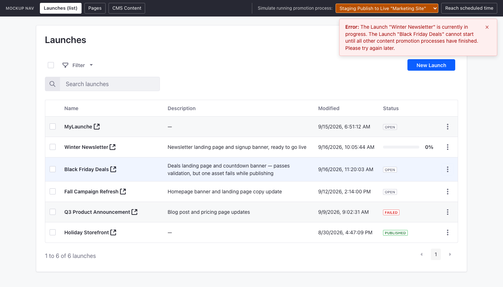
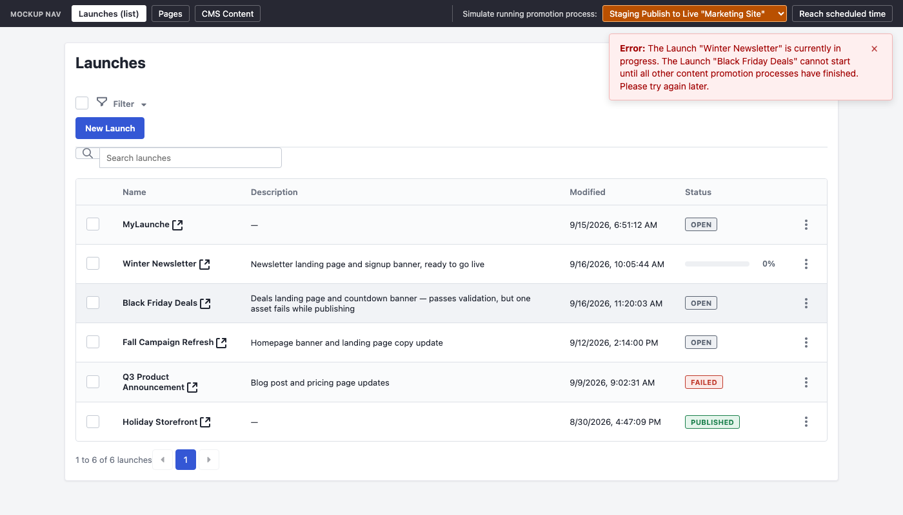

Launches Mockups
Interactive HTML prototypes for Liferay Launches (epics under LPD-50024). Every page is a clickable simulation; no data is saved.

Launches (Clay)
Launches list, Info/Elements form, publish, schedule, error details, Pages and CMS Content drafts.

Launches (custom CSS)
The same prototype with hand-rolled CSS instead of Clay.
Page Editor
Page Editor Launch Selector
Switch between Live and the Launches a page is being worked on in.
Status flow
Page Status Flow
Page draft statuses, transitions and actions inside a Launch.
Simulator
Content Status Simulator
How Content Page and Object Entry statuses change today, with and without workflow.